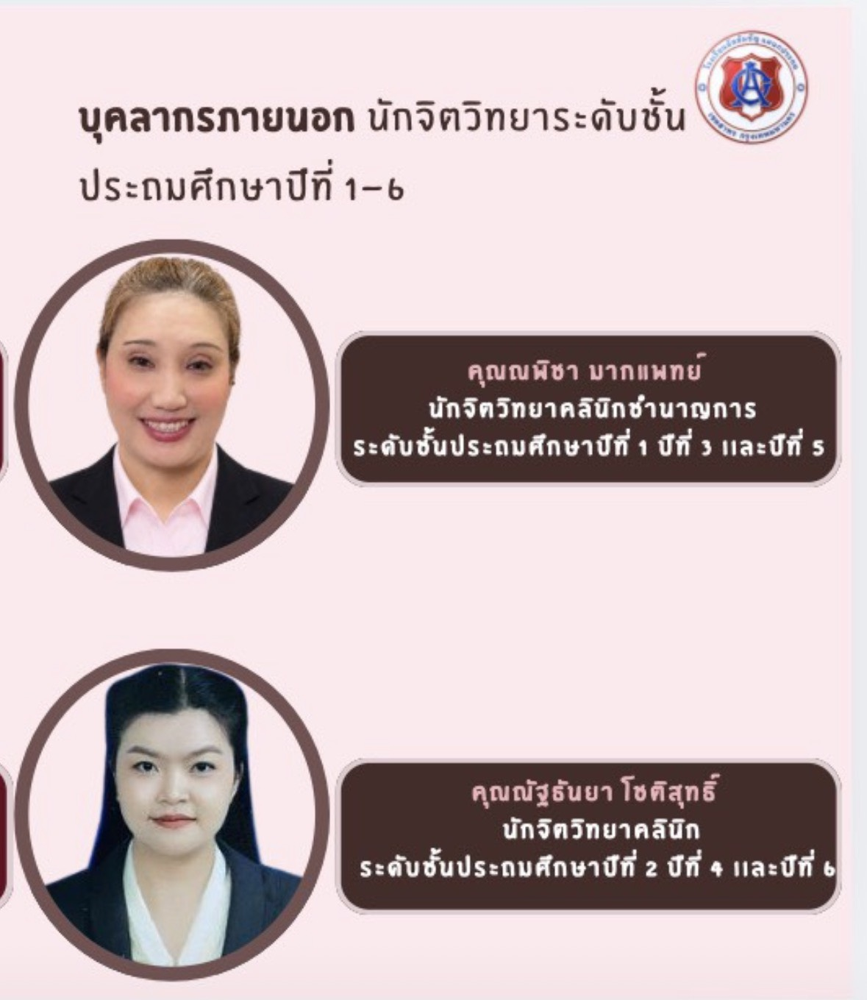
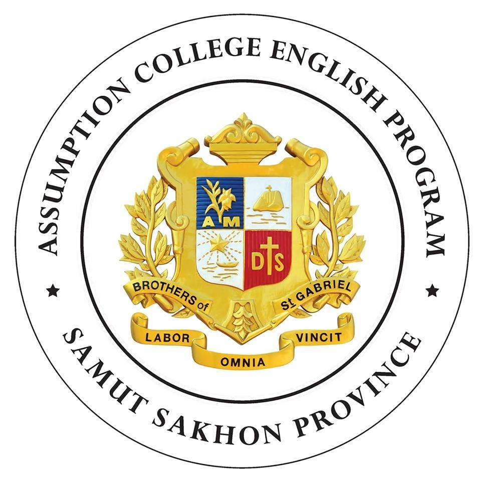

Why This Matters
When parents choose an international school, the single most important question is: who will actually teach my child?
At ACEP we treat that question with the seriousness it deserves. We don't simply hire teachers and hope for the best. We run a deliberate quality process — for both native teachers and Thai teachers — that selects carefully, develops continually, and recognises excellence visibly.
This page makes the entire process transparent — what we expect, how we develop, who teaches today, and what each teacher is still working toward.
The Standard · 3 Stages
Every teacher at ACEP — native or Thai — passes through the same three-stage commitment that keeps classroom standards rising year over year.
Selection · คัดสรร
The right teacher in front of every classroom — entrance exam, qualifications check, demo class, panel interview.
Development · อบรมพัฒนา
Continuous upgrading — Cambridge methodology workshops, classroom observation, mentoring, cross-school exchange.
Recognition · ยกย่อง
Great teaching is seen — Teacher of the Month, Voices video series, parent-facing portfolios, long-service awards.
Direction: all native teachers progressively moving toward British faculty and Cambridge-aligned assessment; all Thai teachers continually upgraded through the same Cambridge methodology.
Our Compass · Cambridge English Teaching Framework
Every ACEP teacher — native and Thai alike — is positioned on the same internationally recognised framework. Teachers see where they stand, plan their next stage, and earn the next qualification.
Cambridge English Teaching Framework
Why Values come first at ACEP: Cambridge groups Values with Professional Development as one of five categories. At ACEP — a Catholic school in the Saint Gabriel tradition — Values are not the afterthought; they are the foundation.
Framework reference: Cambridge English Language Assessment · validated by primary & secondary schools and language schools worldwide (launched April 2014, regularly updated).
ACEP Target Levels
Native Faculty
- Minimum: Subject degree + CELTA or CELT-P or TEFL Level 5 Diploma
- Preferred: + PGCE / iPGCE (UK formal teaching qualification)
- Mentor / Academic Head tier: DELTA or MA TESOL + 5+ years experience
- Target stage: Developing → Proficient within 3 years at ACEP
Thai Faculty
- Minimum: Subject degree + ใบประกอบวิชาชีพครู คุรุสภา + English proficiency IELTS 6.5+ / CEFR B2+
- Pursuing: CELT-P — the same Cambridge certification path as native faculty
- Senior tier: DELTA Modules + ICELT track
- Target stage: Foundation → Developing → Proficient over 5 years at ACEP
Native & Thai Faculty · Same Standard, Different Specifics
Both groups go through the same three stages — but with the specifications appropriate to each.
Native Faculty
- Origin: Native English-speaking countries (progressively all-British)
- Qualification: Degree in subject area + TEFL / CELTA / PGCE
- Selection: CV review · entrance exam · demo class · Director panel · police clearance
- Development: Cambridge methodology · classroom observation · cross-school exchange · annual PD retreat
- Recognition: Teacher of the Month · Voices video series · long-service awards
Thai Faculty
- Origin: Degree-qualified Thai educators · ครู ก.พ./ป.ที่รับรอง
- Qualification: Subject expertise · Thai teaching licence · English proficiency check
- Selection: CV review · entrance exam · demo class · Director panel · background check
- Development: Cambridge methodology workshops (same as native) · mentoring pairs · subject-team planning
- Recognition: Teacher of the Month · long-service awards · internal promotion to academic head track
Stage 01 · Selection Process
The most important decision we make all year. Six explicit steps — no shortcuts.
Position Posting
Detailed job spec aligned with our standard. Posted on relevant boards (Foundation network · international platforms).
CV & Credentials Review
Subject degree + teaching qualification verified directly with the issuing body (Cambridge / TEFL.org / university registrar). Mapped on Cambridge English Teaching Framework.
Entrance Exam
Both native and Thai applicants sit subject-matter and pedagogical knowledge tests. Standardised across all hires.
Demo Class
Live teaching demonstration with real ACEP students. Senior staff observe and score.
Panel Interview
Director + Academic Head + relevant subject lead. Behavioural and values-based interview.
Background & Police Check
Police clearance from country of citizenship · reference checks with prior employers. Required before any classroom assignment.
Stage 02 · Development Cycle
Selection is the start, not the end. The development cycle runs every term, every year, for every teacher.
New Teacher Orientation
Induction week before semester start — curriculum, classroom systems, school values, and ACEP expectations.
Mentoring Pairs
Every new teacher paired with a senior teacher for at least the first year. Weekly 1:1 check-ins.
Cambridge Workshops
Termly methodology workshops — Cambridge-aligned content for English, Math, Science across all teachers.
Classroom Observation
Termly peer-observed teaching with structured feedback. Specific, actionable, on the record.
Cross-School Exchange
Annual exchange with AC, ACT, ACR — observe other classrooms in the foundation network, bring back ideas.
Annual PD Retreat
Year-end teacher retreat — review the year, plan the next, deepen collegial bonds.
Stage 03 · Recognition & Career Pathway
When teaching is great, parents and students should see it — and the teacher should know.
Teacher of the Month
Monthly recognition with public assembly, certificate, and a featured profile on this website.
Voices from the Classroom
Quarterly video series — each teacher introduces themselves, their philosophy, and how they care for each student.
Parent-Facing Portfolio
Public-facing profile on the school website — qualifications, subjects taught, years at ACEP, philosophy.
Long-Service Awards
Recognition at 5, 10, 15+ years of service. Loyalty matters; continuity matters more.
Internal Promotion Track
Clear pathway from teacher → subject lead → academic head → leadership. Built from within.
Compensation Alignment
Performance and qualifications reflected in salary bands. Reviewed annually against market benchmarks.
Faculty Development Calendar · AY 2569
An explicit, year-round commitment — every term, every teacher.
Student & Teacher Support · Psychology Team
Beyond academic teaching, ACEP keeps a dedicated psychology team on campus — supporting both teachers and students from Kindergarten through Primary. The team consults on classroom management, supports children navigating social-emotional growth, and works alongside parents when needed.

Meet the Psychologists

- ✓ดูแลระดับชั้น: ป.1 · ป.3 · ป.5
- ✓นักจิตวิทยาคลินิกชำนาญการ · ใบอนุญาตประกอบโรคศิลปะ
- ✓Available for parent & teacher consultation

- ✓ดูแลระดับชั้น: ป.2 · ป.4 · ป.6
- ✓นักจิตวิทยาคลินิก · ใบอนุญาตประกอบโรคศิลปะ
- ✓Available for parent & teacher consultation
Our Native Teachers Today
The current native faculty teaching at ACEP — each card shows the profile card and compliance status against our standard.
Cards populated dynamically — see faculty-data.js in the repo to edit names, subjects, and compliance status per teacher.
Faculty Quality in Action
Real moments from our standing commitment to teacher quality.

Parents' Questions
How do you ensure every teacher actually meets these standards?
Through process — not promises. Each stage above produces evidence (exam scores, observation notes, feedback forms, certificates) kept on file. The Director reviews compliance termly. Every teacher's stage on the Cambridge English Teaching Framework is recorded and updated.
What is CELT-P, and why mention it specifically?
CELT-P is the Cambridge Certificate in English Language Teaching — Primary. It is the international standard certificate specifically for teachers of primary-age children. Because ACEP focuses on Kindergarten + Primary, CELT-P (rather than the more generic CELTA) is our preferred qualification target for both native and Thai faculty.
Why are "Values" listed first when Cambridge places them last?
The Cambridge English Teaching Framework lists Values together with Professional Development as one of five competency categories. At ACEP — a Catholic school in the Saint Gabriel tradition — we treat Values as the foundation, not an additional skill area.
How is the Thai faculty held to the same standard?
Same selection process (entrance exam, demo class, panel interview), same development cycle (Cambridge workshops, observation, mentoring), and same recognition system. Thai faculty are not "support staff" — they are co-teachers who share full classroom standards.
Why "progressively all-British" instead of "all-British now"?
Honesty. We commit to the direction but do not overstate the present. Each hiring cycle increases the British proportion. Parents can ask the Director for the current breakdown at any time.
Can parents observe a class or meet a teacher before enrolling?
Yes. Schedule a campus visit via the Apply page, or contact the Director's office directly. Sample lessons can be arranged with notice.